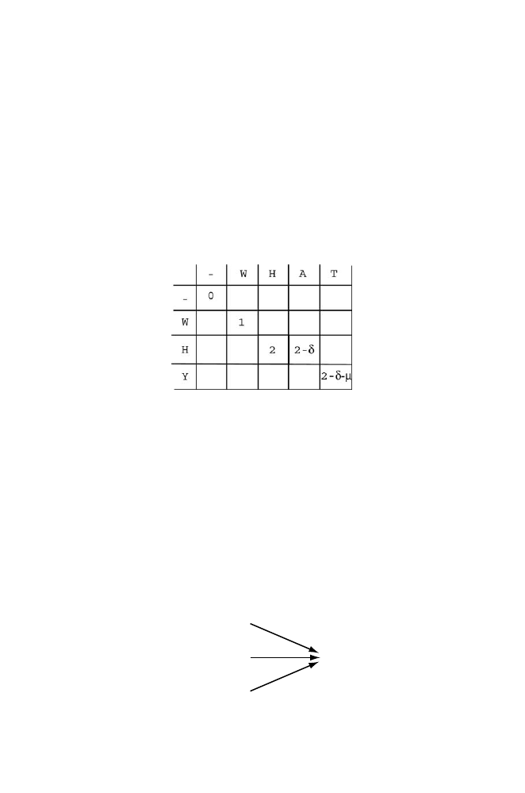

6.2 Basic Example
147
We have placed an
x
in the matrix elements corresponding to a particular
alignment shown. We have included one additional row and one additional
column for initial indels (
−
) to allow for the possibility (not applicable here)
that alignments do not start at the initial letters (
W
opposite
W
in this case).
We can indicate the alignment above as a path through elements of the matrix
(arrows). If the sequences being compared were identical, then this path would
be along the diagonal. Other alignments of
WHAT
with
WHY
would correspond
to paths through the matrix other than the one shown. Each step from one
matrix element to another corresponds to the incremental shift in position
along one or both strings being aligned with each other, and we could write
down in each matrix element the running score up to that point instead of
inserting
x
.
What we seek is the path through the matrix that produces the greatest
possible score in the element at the lower right-hand corner. That is our “des-
tination,” and it corresponds to having used up all of the letters in the search
string (first column) and search space (first row)—this is the meaning of
global
alignment
.
Using a scoring matrix such as this employs a particular trick of thinking.
For example, what is the “best” driving route from Los Angeles to St. Louis?
We could plan our trip starting in Los Angeles and then proceed city to city
considering different routes. For example, we might go through Phoenix, Al-
buquerque, Amarillo, etc., or we could take a more northerly route through
Denver. We seek an itinerary (best route) that minimizes the driving time.
One way of analyzing alternative routes is to consider the driving time to
a city relatively close to St. Louis and add to it the driving time from that
city to St. Louis. Three examples for the last leg of the trip are shown be-
low.
City 1 (Tulsa)
City 2 (Topeka)
St. Louis
City 3 (Little Rock)
1
t
2
t
3
t
We would recognize that the best route to St. Louis is the route to St.
Louis from city
n
+ the best route to
n
from Los Angeles. If
D
1
,
D
2
,